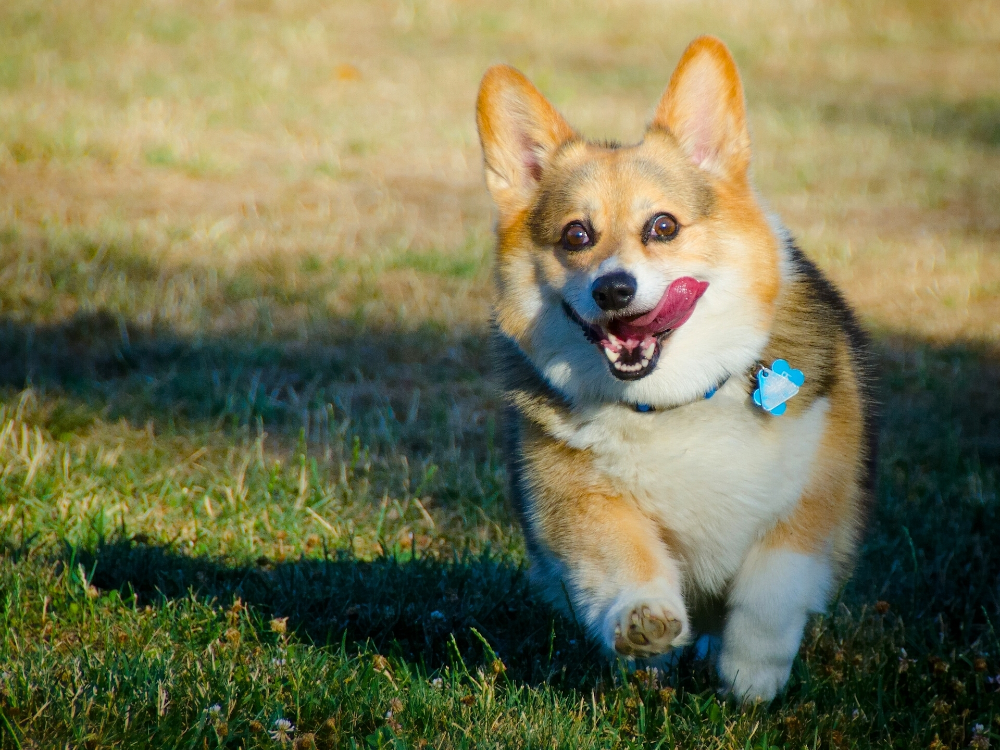

Здесь будет интересная информация про котиков
Определение из Wiki
Дома́шняя ко́шка — домашнее животное, одно из наиболее популярных «животных-компаньонов». С точки зрения научной систематики, домашняя кошка — млекопитающее семейства кошачьих отряда хищных.
Подробнее можно почитать на WikipediaЯ выбрал несколько интересных пород кошек на обзор и распределил всю интересную информацию по ссылкам. Просто кликните на нужную вам картинку с корги. Приятного просмотра)
